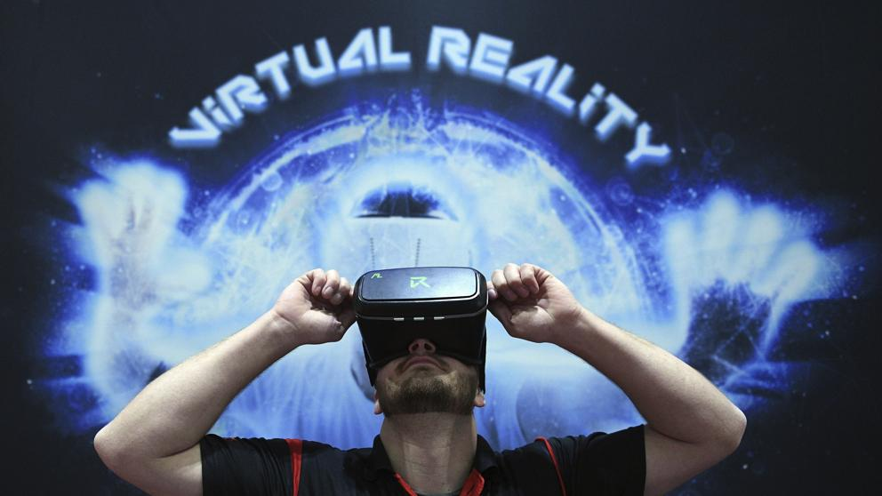

HTML5
HTML5 es la última versión de HTML. El término representa dos conceptos diferentes:
Se trata de una nueva versión de HTML, con nuevos elementos, atributos y comportamientos.
Contiene un conjunto más amplio de tecnologías que permite a los sitios Web y a las aplicaciones ser mas diversas y de gran alcance. A este conjunto se le llama HTML5 y amigos, a menudo reducido a HTML5 .
Diseñado para ser utilizable por todos los desarrolladores de Open Web, esta página referencía numerosos recursos sobre las tecnologías de HTML5, clasificados en varios grupos según su función.
Semántica: Permite describir con mayor precisión cual es su contenido.
Conectividad: Permite comunicarse con el servidor de formas nuevas e innovadoras.
Sin conexión y almacenamiento: Permite a las páginas web almacenar datos localmente en el lado del cliente y operar sin conexión de manera más eficiente.
Multimedia: Nos otorga un excelente soporte para utilizar contenido multimedia como lo son audio y video nativamente.
Gráficos y efectos 2D/3D: Proporciona una amplia gama de nuevas características que se ocupan de los gráficos en la web como lo son canvas 2D, WebGL, SVG, etc.
Rendimiento e Integración: Proporciona una mayor optimización de la velocidad y un mejor uso del hardware.+
Acceso al dispositivo: Proporciona APIs para el uso de varios compomentes internos de entrada y salida de nuestro dispositivo.
CSS3: Nos ofrece una nueva gran variedad de opciones para hacer diseños más sofisticados.
Paginas Relacionadas
ElementosInntroducion
Qué es HTML5
Aprende a Crear tu sitio
Videos Relacionados
Que es HTML5Sucecor de HTML4
Conoce más
Diseño en HTML

CS3
Para qué sirve el css 3?
El CSS sirve para definir la estÉtica de un sitio web en un documento externo y eso mismo permite que modificando ese documento (la hoja CSS) podamos cambiar la estética entera de un sitio web, el mismo sitio web puede variar totalmente de estética cambiando solo la CSS, sin tocar para nada los documentos HTML o jsp o asp que lo componen. CSS es un lenguaje utilizado para dar estética a un documento HTML (colores, tamaños de las fuentes, tamaños de elemento, con css podemos establecer diferentes reglas que indicarán como debe presentarse un documento. Podemos indicar propiedades como el color, el tamaño de la letra, el tipo de letra, si es negrita, si es itálica, también se puede dar forma a otras cosas que no sean letras, como colores de fondo de una pagina, tamaños de un elemento (por ejemplo el alto y el ancho de una tabla.Ventajas y desventajas de css3
Se obtiene un mayor control de la presentación del sitio al poder tener todo el código CSS reunido en uno, lo que facilita su modificación. Al poder elegir el archivo CSS que deseamos mostrar, puede aumentar la accesibilidad ya que podemos asignarle un código CSS concreto a personas con deficiencias visuales, por ejemplo. Esto lo detecta el navegador web. Conseguimos hacer mucho más legible el código HTML al tener el código CSS aparte (Siempre que no usemos estilos en línea, claro está).Pueden mostrarse distintas hojas de estilo según el dispositivo que estemos utilizando (versión impresa, versión móvil, leída por un sintetizador de voz…) o dejar que el usuario elija. Gracias a la técnica CSS Sprites podemos aligerar la carga de nuestro sitio al juntar todas las imágenes en una.
Las novedades de CSS3 nos permiten ahorrarnos tiempo y trabajo al poder seguir varias técnicas (bordes redondeados, sombra en el texto, sombra en las cajas, etc.) sin necesidad de usar un editor gráfico.
Desventajas
Existen limitaciones que CSS 2.x todavía no permite, por ejemplo, la alineación vertical de capas, las sombras, los bordes redondeados… El uso de las tablas nos permitia crear diseños complejos de forma mucho más sencilla que utilizando CSS, aunque CSS3 está intentando facilitar dicho trabajo. A veces, dependiendo del navegador (Acid tests), la página que ha sido maquetada con CSS puede verse distinta (Aunque, si hemos seguido los estandares web de forma correcta, el problema es del navegador).
Paginas Relacionadas
CSS TutorialBreve introducción
Lenguaje CSS
Aprende HTML5 y CSS3
Videos Relacionados
Efecto CSSAprediendo
Diseña un Sitio
Tutorial

JAVA SCRIPT
JavaScript (JS) es un lenguaje ligero e interpretado, orientado a objetos con funciones de primera clase, más conocido como el lenguaje de script para
páginas web,
pero también usado en muchos entornos sin navegador, tales como node.js, Apache CouchDB y Adobe Acrobat. Es un lenguaje script multi-paradigma, basado en
prototipos, dinámico, soporta estilos de programación funcional, orientada a objetos e imperativa. Leer más sobre JavaScript.
Esta sección de la web está dedicada al lenguaje JavaScript en si mismo, no a las partes que son específicas de las páginas web u otros entornos de servidor.
Para información sobre las APIs específicas de las páginas web, consulte DOM y las APIs WEB.
El estándar de JavaScript es ECMAScript. Desde el 2012, todos los navegadores modernos soportan completamente ECMAScript 5.1. Los navegadores más antiguos
soportan por lo menos ECMAScript 3. El 17 de Julio de 2015, ECMA International publicó la sexta versión de ECMAScript, la cual es oficialmente llamada
ECMAScript 2015, y fue inicialmente nombrada como ECMAScript 6 o ES6. Desde entonces, los estándares ECMAScript están en ciclos de lanzamiento anuales.
Esta documentación se refiere a la última versión del borrador, que actualmente es ECMAScript 2019.
JavaScript no debe ser confundido con el lenguaje de programación Java. Ambos "Java" y "Javascript" son marcas registradas de Oracle en Estados Unidos y
otros países. Sin embargo, los dos lenguajes de programación tienen muchas diferencias en las sintaxis, semantica y usos.
Paginas Relacionadas
Javascript a fondoJavaScript
Intro to JavaScript
Introducción a JavaScript
Videos Relacionados
Aplicaciones de JavaCurso Basico
Que es JavaScript
Curso Intermedio

PROGRESSIVE WEB APPS
Progressive web apps (o aplicaciones web progresivas), es un término que se da a una nueva generación de aplicaciones que incrementan su funcionalidad,
conforme las capacidades del dispositivo en el que se ejecutan, incrementan, de ahí la palabra progresiva. La siguiente parte del nombre web, hace
referencia a que se construyen utilizando estándares de desarrollo web, algunos ya conocidos como HTML, CSS y javaScript; y una nueva generación de
APIs de javaScript. La parte final app es porque las Progressive Web Apps se comportan como aplicaciones web nativas, pero usan tecnologías web.
Progressive web apps
Una nueva generación de estándares web, quiera completar la brecha, algo que me gusta y entusiasma, es que los estándares y los navegadores, han progresado tanto,
que ya no buscamos crear aplicaciones nativas, falsas, con tecnologías web; lo que buscamos ahora es crear aplicaciones web, que por sí mismas, cubran las brechas
de experiencia que las aplicaciones nativas tenían de ventaja. Son aplicaciones web, no aplicaciones nativas, pero usar cualquiera de ellas es (o debería ser)
indiferente para el usuario.
Las aplicaciones web progresivas son experiencias de usuario que tienen el alcance de la web y son:
Fiable : cargue instantáneamente y nunca muestre el downasaur, incluso en condiciones de red inciertas.
Rápido : responda rápidamente a las interacciones del usuario con animaciones suaves como la seda y sin necesidad de desplazarse por el janky.
Atractivo : siéntete como una aplicación natural en el dispositivo, con una experiencia de usuario inmersiva.
Este nuevo nivel de calidad permite que las aplicaciones web progresivas ganen un lugar en la pantalla de inicio del usuario.
Paginas Relacionadas
¿Qué son las Progressive Web Apps?Progressive web apps
Progressive Web Apps on iOS
Descripcion
Videos Relacionados
Progressive Web AppsQué son y cómo hacer una fácilmente
Tutorial
Introducion
INTELIGENCIA ARTIFICIAL
Normalmente la inteligencia artificial se refiere a máquinas que aprenden de manera autónoma o semiautónoma a partir de grandes bases de datos.
¿Cómo funcionan estas capacidades?
La inteligencia artificial se desarrolla a partir de algoritmos,que son capacidades matemáticas de aprendizaje, y de los datos que hacen falta para entrenar
los algoritmos. Los datos normalmente son datos observables, datos disponibles públicamente o datos generados en algunas empresas. Y los algoritmos iteran
sobre esos datos para aprender a partir de ellos.
¿Qué riesgos plantea la inteligencia artificial?
La inteligencia artificial tiene muchas aplicaciones posibles. Vamos a ver inteligencia artificial en conducción autónoma, en reconocimiento de lenguaje natural,
en todos esos dispositivos que tenemos en nuestro entorno que interpretan lo que nosotros estamos diciendo. Las empresas van a utilizar también la inteligencia
artificial para mejorar sus procesos, para automatizar muchos de esos procesos.
El problema es que también plantea una serie de retos. Efectivamente, la inteligencia artificial no es completamente inocua; en algunos casos puede generar
nuevos riesgos en mercados financieros o puede generar problemas de competencia por seguir prácticas de otros competidores de manera automatizada infringiendo
la normativa elemental de buen funcionamiento de un mercado. Por lo tanto, hay que empezar a visualizar en cada uno de los usos de la inteligencia artificial
cuáles son los límites o de qué manera deben abordarse para garantizar que se mantiene la protección al consumidor, el buen funcionamiento de los mercados al
tiempo que se aprovechan todas esas ventajas que introduce la tecnología.
Paginas Relacionadas
El experto en Inteligencia ArtificialInteligencia artificial
Aprediendo
La Primera Inteligencia Artificial
Videos Relacionados
Titanes de la InteligenciaQue es
Puede la Inteligencia
¿Las Máquinas Pueden Pensar?
MACHINE LEARNING
Machine learning es un subconjunto de AI. Es decir, todo aprendizaje automático cuenta como AI, pero no todas las IA cuentan como aprendizaje
automático. Por ejemplo, la lógica simbólica (motores de reglas, sistemas expertos y gráficos de conocimiento) podría describirse como IA, y
ninguno de ellos es aprendizaje automático.
Un aspecto que separa el aprendizaje automático de los gráficos de conocimiento y los sistemas expertos es su capacidad de modificarse a
sí mismo cuando se expone a más datos; es decir, el aprendizaje automático es dinámico y no requiere intervención humana para realizar ciertos cambios.
Eso lo hace menos frágil y menos dependiente de los expertos humanos.
Paginas Relacionadas
¿Qué es Machine Learning?Machine Learning?
Aprendizaje Machine Learning?
Aprediendo
Videos Relacionados
¿Qué es Machine Learning?7 tips sobre Learning
Introduccion
Aprediendo
DEEP LEARNING
El aprendizaje profundo es un subconjunto del aprendizaje automático. Usualmente, cuando las personas usan el término aprendizaje profundo,
se refieren a redes neuronales artificiales profundas , y algo menos frecuentemente al aprendizaje de refuerzo profundo .
Las redes neuronales artificiales profundas son un conjunto de algoritmos que han establecido nuevos registros en precisión para muchos problemas importantes,
como reconocimiento de imágenes, reconocimiento de sonido, sistemas de recomendación, etc. Por ejemplo, el aprendizaje profundo es parte del conocido algoritmo
AlphaGo de DeepMind, que vencer al ex campeón mundial Lee Sedol en Go a principios de 2016, y al actual campeón mundial Ke Jie a principios de 2017.
Paginas Relacionadas
Relacion de Deep Learning y Inteligencia Artificial¿Qué es el deep learning?
Redes Neuronales y Deep Learning
Deep Learning in Python
Videos Relacionados
¿Que es una Red Neuronal y el Deep Learning?Introduccion
Deep Learning en Carros
Mas Sobre Deep Learning
RED NEURONAL
Las redes neuronales son un conjunto de algoritmos, modelados libremente después del cerebro humano, que están diseñados para reconocer patrones.
Interpretan los datos sensoriales a través de un tipo de percepción de máquina, etiquetado o agrupamiento de entrada sin procesar. Los patrones
que reconocen son numéricos, contenidos en vectores, en los cuales deben traducirse todos los datos del mundo real, ya sean imágenes, sonido, texto
o series temporales.
Las redes neuronales nos ayudan a agrupar y clasificar. Puede pensar en ellos como una capa de agrupamiento y clasificación sobre los datos que almacena y
administra. Ayudan a agrupar los datos no etiquetados de acuerdo con las similitudes entre las entradas de ejemplo, y clasifican los datos cuando tienen un
conjunto de datos etiquetados para entrenar. (Las redes neuronales también pueden extraer características que se incorporan a otros algoritmos para clustering
y clasificación, por lo que puede pensar en redes neuronales profundas como componentes de aplicaciones más grandes de aprendizaje automático que involucran
algoritmos para reforzar el aprendizaje , la clasificación y la regresión ).
Paginas Relacionadas
Modelo de Redes NeuronalesQué Son y Por qué Están Volviendo
Avances en Redes Neuronales
Redes Neuronales
Videos Relacionados
¿Que es ?Como Funcionan
Vea en Detalle
Que es la Red y Deep Learning
CRIPTOMONEDAS
Las criptomonedas son un modelo de monedas virtuales que no se pueden tocar, ya que solo existen en formato digital.
Estas monedas electrónicas se saltan los límites geográficos, ya que se pueden gestionar y operar desde cualquier parte del mundo. Se utilizan
sistemas para encriptarlas, mediante claves de seguridad, y así convertirlas en un sistema seguro y anónima para las personas, y se pueden
utilizar para realizar pagos y realizar transacciones económicas, tal y como se utiliza el dinero convencional.
Son muchas las personas que piensan que las criptodivisas pueden llegar a desbancar al dinero físico como el más utilizado. Cabe decir que, por ahora,
aún o está extendido de forma masiva en todo el mundo, pero cada vez son más las personas que se introducen el mundo de las monedas virtuales.
Aquí podrás conocer toda la información necesaria para saber cómo es el mundo de las criptomonedas, cómo se consiguen, qué beneficios poseen y cómo
funciona realmente el mercado mundial de las criptodivisas.
Paginas Relacionadas
¿En qué Consisten las Criptomonedas?Por qué no voy a Invertir en Bitcoin ni en Criptomonedas
Lideran uso de Criptomonedas
Las Cinco Criptomonedas más Valiosas
Videos Relacionados
¿Que Son las Criptomonedas?¿Quién Inventó el Dinero?
3 Puntos sobre Criptomoneda
¿Cómo Funcionan las Criptomonedas?
BLOCKCHAIN
La presente definición de cadena de bloques (block chain) es la referida a la tecnología Bitcoin desarrollada por Satoshi Nakamoto, en la que la
block chain es una parte integrante de ella; a diferencia del nuevo vocablo ‘blockchain’ introducido por diferentes empresas y autores para
referirse a la tecnología Bitcoin como un todo.
Una cadena de bloques (block chain), también conocida como libro de contabilidad distribuido (distributed ledger), es una base de datos distribuida que
registra bloques de información y los entrelaza para facilitar la recuperación de la información y la verificación de que ésta no ha sido cambiada.
Los bloques de información se enlazan mediante apuntadores hash que conectan el bloque actual con el anterior y así sucesivamente hasta llegar al bloque génesis.
La cadena de bloques es almacenada por todos aquellos nodos de la red que se mantienen en sincronía con ésta.
Cada bloque perteneciente a la cadena de bloques contiene información referente a las transacciones relativas a un periodo (agrupadas en una
estructura denominada Merkle Tree), la dirección criptográfica (apuntador hash) del bloque anterior y un número arbitrario único (nonce).
Paginas Relacionadas
PaginaCual es la Tecnologia Blockchain
Definicion
Cadena Blockchain
Videos Relacionados
Cómo Funciona Blockchain.Aprediendo
Como Usarlos
Otros Usos
CYBERSEGURIDAD
Qué es la ciberseguridad
Según los profesionales en seguridad de ISACA (Information Systems Audit and Control Association) la ciberseguridad se define como una capa de
protección para los archivos de información, a partir de ella, se trabaja para evitar todo tipo de amenazas, las cuales ponen en riesgo la información
que es procesada, transportada y almacenada en cualquier dispositivo.
La ciberseguridad trata de trabajar en robustos sistemas que sean capaces de actuar antes, durante y después, no sirve solo para prevenir, sino
también dar confianza a los clientes y al mercado, pudiendo así reducir el riesgo de exposición del usuario y de los sistemas.
El perfil de ciberseguridad: Lo más deseado
Es un hecho que, en esta sociedad que hoy en día es más global, móvil y digital, los riesgos que se relacionan con la seguridad de información se
multiplican, es por ello que los expertos en la ciberseguridad se encuentran muy demandados en el mercado laboral, y cada día este número aumenta.
Las empresas necesitan de estos profesionales ya que saben que la prevención es la clave para proteger la información y no verse inmiscuido en situaciones
de debilidades con secuelas inmensas para dichas empresas. Por tanto, estar formado en ciberseguridad es una muy buena opción para encontrar empleo a día de hoy.
Paginas Relacionadas
¿Qué es la Ciberseguridad?Noticias
Protección Digital a Todos los Niveles
Como Aplicarla en mi Negocio
Videos Relacionados
Cyberseguridad en las PymesConsejos Sobre Cyberseguridad2
Tiempos de Riesgo y Cyberseguridad
Cyberseguridad Contra Cybercarteristas

REALIDAD VIRTUAL
Cuando hablamos de realidad virtual… ¿que entendemos? Según la definición regularizada, podemos tomarla como “Representación de escenas o imágenes
de objetos producida por un sistema informático, que da la sensación de su existencia real.” fuente RAE.
A nuestro modo de ver, la realidad virtual (VR) consiste en la inmersión sensorial en un nuevo mundo, basado en entornos reales o no, que ha sido generado
de forma artificial, y que podemos percibir gracias a unas gafas de realidad virtual y sus accesorios (cascos de audio, guantes, etc…). El objetivo de esta
tecnología es crear un mundo ficticio del que puedes formar parte e incluso ser el protagonista: viendo un coche en un concesionario virtual, siendo protagonista
de un videojuego o bien practicando como hacer una operación a corazón abierto.
Como pasó con los teléfonos móviles o internet, la aparición de la realidad virtual supone uno de los cambios tecnológicos más importantes de los últimos tiempos.
Aunque aún no seamos demasiado conscientes, por la falta de medios para probarlo y también por la escasez actual de aplicaciones desarrolladas (las cuales son cada
vez más numerosas y más complejas), la realidad virtual y su adaptación a nivel usuario supondrá un antes y un después en la forma en la que consumimos contenidos
multimedia: videojuegos, cine, eventos deportivos, conciertos, documentales, etc…
Técnicas para una inmersión total
Las gafas de realidad virtual disponen de algo muy curioso y necesario, como es el aislamiento del mundo real. Para que la sensación de inmersión y realidad
paralela que vivas sea lo más completa posible. Siendo el oído y la vista los sentidos que más estímulos reciben.
Paginas Relacionadas
Que es La Realidad VirtualUn Poco de Historia
La Realidad Virtual, la Tecnología del Presente y del Futuro
Prueba de Gafas
Videos Relacionados
¿Qué es Realidad virtual?Ventajas y Desventajas
¿Cómo funciona? y Usos
Probamos la Realidad Virtual
REALIDAD AUMENTADA
La realidad aumentada es un tema que está dándose a conocer, hay muchos proyectos en desarrollo y otros que ya están en el mercado.
Es una tecnología relativamente nueva que se diferencia de la realidad virtual.
La realidad aumentada es una tecnología que mezcla la realidad y a esta le añade lo virtual, esto suena a realidad virtual pero en realidad no lo es,
la diferencia es que la realidad virtual se aísla de lo real y es netamente virtual.
Entonces podemos definir la realidad aumentada como el entorno real mezclado con lo virtual la realidad aumentada puede ser usada en varios dispositivos
desde computadores hasta dispositivos móviles, HTC android e Iphone los dispositivos que ya están implementando esta tecnología.
Componentes de la realidad aumentada
• Monitor del computador: instrumento donde se vera reflejado la suma de lo real y lo virtual que conforman la realidad aumentada.
• Cámara Web: dispositivo que toma la información del mundo real y la transmite al software de realidad aumentada.
• Software: programa que toma los datos reales y los transforma en realidad aumentada.
• Marcadores: los marcadores básicamente son hojas de papel con símbolos que el software interpreta y de acuerdo a un marcador especifico realiza
una respuesta especifica (mostrar una imagen 3D, hacerle cambios de movimiento al objeto 3D que ya este creado con un marcador)
Paginas Relacionadas
¿Qué es la Realidad Aumentada?Cómo se Diferencia de la Realidad Virtual
Diferencias entre Realidad Aumentada, Realidad Virtual y Realidad Mixta
App en las que Puedes usarla
Videos Relacionados
¿Cómo Funciona? y UsosQue es la Realidad Virtual y Realidad Aumentada
Cortometraje basado en Realidad Aumentada
COMO HACER REALIDAD AUMENTADA
REALIDAD MIXTA
Cada vez se habla más de la aparición de la realidad mixta (MR) como una tecnología que va a llegar y sobrepasar a las actuales realidad virtual (VR)
y realidad aumentada (AR). Sin embargo, aunque es un término muy usado en los foros de realidad virtual, todavía se desconoce mucho acerca de esta
tecnología y de su potencial.
La idea de la realidad mixta es crear una tecnología que sea mezcla de la VR y la AR. Pero, ¿qué es cada una de ellas?
La realidad virtual implica la creación de una realidad alternativa a la que se accede a través de un dispositivo que aísla al usuario de su entorno físico.
Mientras, la realidad aumentada supone la visualización, a través de una pantalla, de objetos u otras capas de información al mundo físico en que vivimos.
Y, cómo se ha comentado anteriormente, la realidad mixta va a ser una combinación de ambas que supondrá la fusión del mundo físico con el mundo digital.
¿Cómo funciona la realidad mixta?
En la realidad mixta se trata de llevar el mundo real al mundo virtual. La idea es generar un modelo 3D de la realidad y sobre él superponer información virtual.
De esta forma, se podrán combinar ambas realidades para agregar contenido adicional de valor para el usuario de MR.
Conseguir esta traslación del mundo real a un modelo 3D virtual es uno de los principales retos de esta tecnología. Uno de los métodos para logra la fusión de
ambos mundos y formar un espacio común es la que se utiliza en Project Tango de Google. Este método consiste en el escaneo del espacio en tiempo real para poder
conseguir el mix del modelo 3D real con el virtual.
Paginas Relacionadas
Realidad Mixta, ¿El Futuro de la Tecnología Inmersiva?Realidad Mixta
¿Qué Significa "inmersión" Realmente?
Las Primeras Aplicaciones
Videos Relacionados
Que es Realida MixtaLlego la Realida
Aprediendo3
Aprediendo4
INTERNET DE LAS COSAS (IOT)
No paramos de oír que el Internet de las Cosas va a cambiar nuestro mundo y que tarde o temprano, revolucionará nuestra forma de interactuar
con los dispositivos. Pero ¿Sabes qué es o en qué consiste? Te lo contamos.
El Internet of Things, Internet de las Cosas o IoT es un concepto que se refiere a la interconexión digital de los objetos cotidianos con Internet,
convirtiéndose así en objetos inteligentes.
El término fue acuñado en 1999 por Kevin Ashton, un investigador del MIT, mientras él y sus compañeros realizaban estudios en el campo de la identificación
por radiofrecuenta y tecnologías de sensores.
Para entender en qué consiste el Internet de las Cosas tenemos que echar la vista atrás. Y es que, desde hace 30 años, se están intentando hacer un poco más
interactivos los objetos cotidianos. De ahí surge, precisamente, la idea del hogar conectado o las smart cites.
Pero, ¿Cómo funciona el Internet de las Cosas? La clave está en las herramientas que convierten a los objetos en objetos inteligentes, permitiéndoles conectarse
a Internet para ampliar las funciones que son capaces de realizar.
De esta forma, una lavadora puede dejar nuestra ropa impoluta, pero una lavadora inteligente también podrá activarse por control remoto cuando estemos fuera
de casa, recoger estadísticas sobre el uso que le damos y ofrecernos conclusiones para que le demos un uso aún más eficiente.
Eso sí, una lavadora inteligente puede no dar demasiada información. Sin embargo, una red en la que muchos usuarios estén utilizando objetos inteligentes
nos ayudará a generar el big data suficiente como para optimizar no sólo nuestro comportamiento, sino también el de ciudades enteras.
Paginas Relacionadas
¿Qué es el "Internet de las cosas"?El marketing y el Internet de las cosas (IoT)
El Marketing y el Internet de las Cosas (IoT)
Mirando hacia el futuro
Videos Relacionados
¿Qué es y cómo funciona?Ejemplo de Hasta Donde Llegará el Internet de las Cosas
¿Qué es y cómo Funciona?
¿Qué es el Internet de las Cosas y Para qué Sirve?
MECATRONICA
La mecatrónica es una disciplina que une la ingenieria mecánica, ingenieria electronica, ingenieria de control e ingenieria informática,
y sirve para diseñar y desarrollar productos que involucren sistemas de control para el diseño de productos o procesos inteligentes, lo cual
busca crear maquinaria más compleja para facilitar las actividades del ser humano a través de procesos electrónicos en la industria mecánica,
principalmente. Debido a que combina varias ingenierías en una sola, su punto fuerte es la versatilidad.
Un consenso común es describir a la mecatrónica como una disciplina integradora de las áreas de mecánica, electronica e informatica cuyo objetivo
es proporcionar mejores productos, procesos y sistemas. La mecatrónica no es, por tanto, una nueva rama de la ingenieria, sino un concepto
recientemente desarrollado que enfatiza la necesidad de integración y de una interacción intensiva entre diferentes áreas de la ingeniería.
Con base en lo anterior, se puede hacer referencia a la definición propuesta por J. A. Rietdijk: "Mecatrónica es la combinación sinergia de la
ingeniería mecánica de precisión, de la electronica, del control automatico y de los sistemas para el diseño de productos y procesos", la cual busca
crear maquinaria más compleja para facilitar las actividades del ser humano a través de procesos electrónicos en la industria mecánica principalmente.
El campo ocupacional actual de la mecatrónica está en empresas de la industria automotriz, manufacturera, petroquímica, metal-mecánica, alimentos
y electromecánica, realizando sobre todo actividades de diseño, manufactura, programación de componentes y sistemas industriales y equipo especializado,
así como en la promoción y activación de empresas de servicios profesionales.
Paginas Relacionadas
Que es y aplicacionesAreas
¿Por qué estudiar Ingeniería Mecatrónica?
Mas...
Videos Relacionados
¿Qué es la ingeniería mecatrónica?Donde puedo laborar
Proyecto Mecatrónica
Para que sirve la Mecatronica?
3D PRINTING
La impresión 3D o la fabricación aditiva es un proceso de creación de objetos sólidos tridimensionales a partir de un archivo digital.
La creación de un objeto impreso en 3D se logra mediante procesos aditivos. En un proceso aditivo, un objeto se crea colocando sucesivas capas
de material hasta que se crea el objeto. Cada una de estas capas se puede ver como una sección transversal horizontal en rodajas finas del objeto eventual.
La impresión 3D es lo opuesto a la fabricación sustractiva que consiste en cortar / ahuecar una pieza de metal o plástico con, por ejemplo, una fresadora.
La impresión 3D le permite producir formas complejas (funcionales) utilizando menos material que los métodos de fabricación tradicionales.
¿Cómo funciona la impresión 3D?
Todo comienza con la creación de un modelo 3D en su computadora. Este diseño digital es, por ejemplo, un archivo CAD (Computer Aided Design).
Un modelo 3D se crea desde cero con el software de modelado 3D o se basa en los datos generados con un escáner 3D. Con un escáner 3D , puede crear
una copia digital de un objeto.
Escáneres 3D
Actualmente, los precios de los escáneres 3D van desde costosos escáneres 3D de grado industrial hasta escáneres DIY de $ 30 que cualquiera
puede hacer en casa. Hemos creado una guía práctica para escanear la tecnología aquí , clasificándolas por precio, velocidad, precisión y capacidades de software.
Paginas Relacionadas
Que es ?Servicios Printing
Sistemas Disponibles
Mas...
Videos Relacionados
¿Como funciona?Funciones y Precios
Pruebas
Algunos Objetos

TECNOLOGÍA G5
A pesar de que actualmente son muchos para los que el 4G todavía es un sueño lejano fabricantes y operadores ya están mirando más allá.
Los hasta 300 Mbps de bajada que nos ofrecen a día de hoy las redes 4G parecen no ser suficientes para las demandas futuras y la industria
ya está preparando el nuevo salto, la llegada del 5G.
Pero aunque se está empezando a hablar de ello, lo cierto es que los fabricantes todavía están con los cimientos de una tecnología que ya ha demostrado
que puede llegar a ofrecer hasta más de 7 Gbps en entornos reales. Conozcamos con más detalle como funcionaría y que nos traerá de nuevo la tecnología 5G.
Objetivo: 2020
Efectivamente, hasta 2020 probablemente no empezará a llegar pero ya está en marcha. Con el 4G todavía en despliegue, al menos en España, los
fabricantes de dispositivos de redes ya han establecido un calendario para ponerse a trabajar en el 5G. Hasta la llegada de 2016 es tiempo
para las investigaciones, pruebas y prototipos, dándose posteriormente dos años para la creación del estándar, otro año para el desarrollo de
productos y, finalmente, su despliegue en 2020.
La realidad es que actualmente el 5G acaba de salir de los laboratorios. A finales de 2014 vimos como Samsung realizaba unas pruebas en entornos
reales realmente prometedoras. En la prueba realizada en un vehículo que viajaba a cuatro kilómetros por hora la velocidad llegó a alcanzar los 7.5 Gbps
de velocidad de descarga.
ero es que viajando a 100 kilómetros por hora, bastante problemático con otro tipo de redes debido a los saltos entre antenas que suponen en muchas
ocasiones pérdidas de conexión, los coreanos lograron una tasa de descarga de 1.2 Gbps, logrando además que la conexión se mantuviese estable, sin
desconexiones o interrupciones.
Para los que quieran soñar aun más los investigadores de la universidad de Surrey, en Reino Unido, han logrado un récord fuera de todas las quinielas,
1 Tbps de bajada. En su caso hablamos de pruebas en un entorno aislado, con una transmisión a tan solo 100 metros de distancia, pero quien sabe a donde
llegaremos en un futuro.
Paginas Relacionadas
Tecnología ModularGenerará tecnología
Tecnología G5 de Samsung
Mas...
Videos Relacionados
Los Futuros Móviles 5G y sus PeligrosLa Siniestra Tecnología 5G
Tecnología que Cambiara
G5 Tecnologia
Que hemos Aprendido?